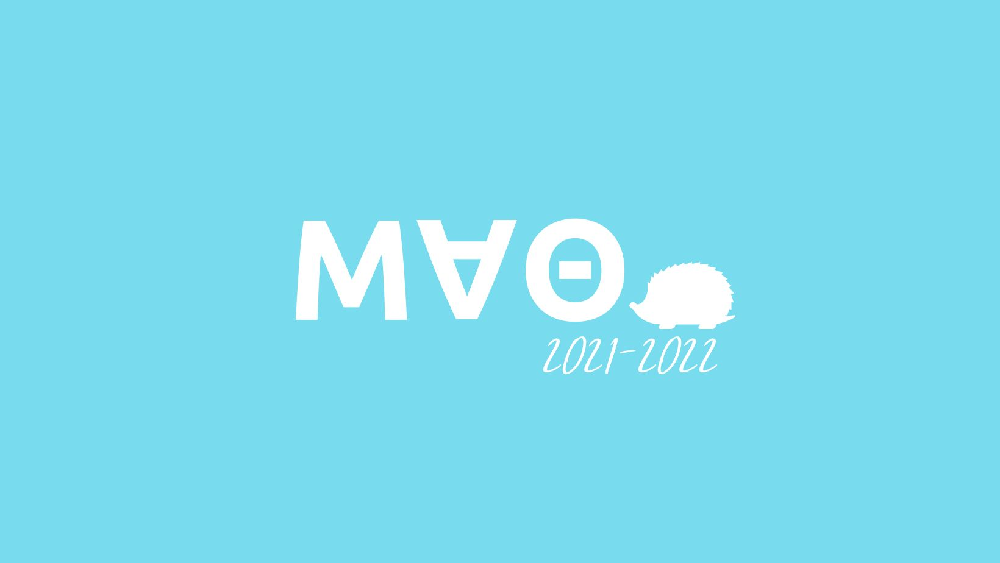

Mu Alpha Theta is the official math club at TAMS
Mu Alpha Theta (MAΘ) is the official math club at TAMS, and we are excited to welcome you to our Website!
MAΘ's mission is to recognize and foster mathematical interests in the student body of TAMS. We participate in many competitions throughout the year including the Texas A&M University High School Mathematics Contest, Harvard-MIT Mathematics Tournament, F=MA, and AMC 12. Also, we strive to impact our community and encourage math pursuits through local elementary school volunteering.